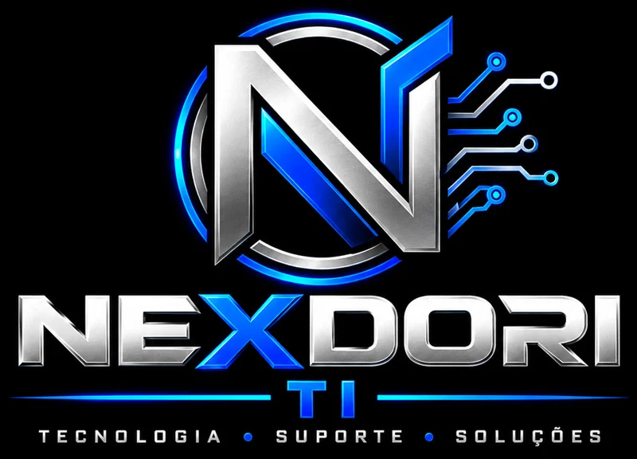

Suporte remoto
Acesso seguro e autorizado por você para resolver lentidão, erros e configurações sem sair de casa.
Do notebook que travou ao Wi-Fi do escritório: atendimento remoto ou presencial, com cada passo explicado em linguagem simples.

Tudo o que seu computador, sua rede e seus dados precisam, em um só lugar.
Acesso seguro e autorizado por você para resolver lentidão, erros e configurações sem sair de casa.
Limpeza, formatação, troca de SSD e memória, upgrades e montagem de computadores.
Roteadores, cobertura de sinal, cabeamento, VPN e compartilhamento de arquivos.
Remoção de vírus e golpes, antivírus, backup automático e recuperação de dados.
Instalação, ativação, contas Microsoft, e-mail, impressoras e periféricos.
Contrato mensal, inventário, servidores, Microsoft 365 e suporte à equipe.
Do primeiro contato à solução, em quatro etapas.
Conte o problema pelo formulário ou pelo WhatsApp.
Analisamos o caso e enviamos o orçamento antes de começar.
Resolvemos de forma remota ou presencial, explicando o que foi feito.
Conferimos se tudo segue funcionando e tiramos suas dúvidas.
Peça um orçamento sem compromisso: o valor depende do seu caso.
Tutoriais passo a passo, dicas e análises de tecnologia, informática e produtividade.
Sim. Usamos acesso remoto seguro, somente com a sua autorização, e você acompanha tudo na tela. Ao final, o acesso é encerrado.
Os chamados são respondidos em horário comercial, e casos urgentes passam na frente.
Acessamos só o necessário para resolver o problema e nunca sem o seu consentimento.
Pix e cartão para pessoas físicas; Pix, cartão e boleto para empresas.
Sim, com contrato mensal, prazos de resposta combinados e relatórios.
Descreva o problema e responderemos pelo WhatsApp.